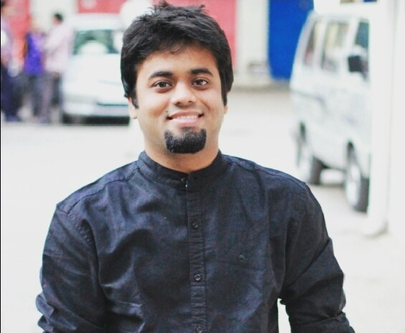
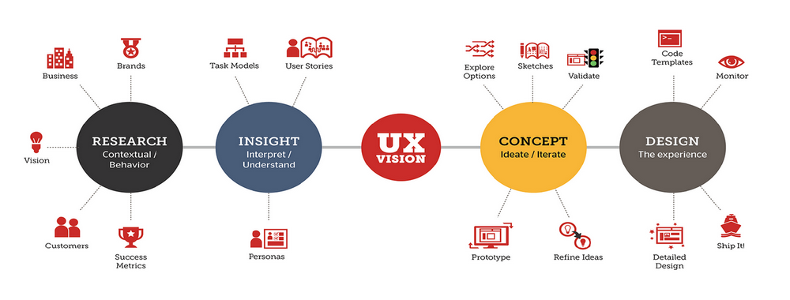

Intro

Dear Reader,
I am a creative engineer with skills and competence within both the research and development field who really enjoys when many things are happening at the same time. If your company is growing very fast, especially in my areas of interest, product design and services.Then I would very much like to contribute to the company’s future development and be a part of various teams.
The goal with my education at Uppsala University has been to be able to work with user experience, behaviour and design of products and services. I am looking for positions with the right combination of technology and innovation work.
I would really like to work with teams towards development which contribute to people’s wellbeing and health. I believe in hard work and perseverance leads to great things. I believe that one can gain experience from any job and use it in different domains. I do not hesitate to work for any company at any level, I find it interesting, and I really enjoy it. As a person I am welcoming, something which I have shown through extracurricular activities such as being responsible for the reception of new students and through different jobs in the education industry. I am also a creative person who likes to work with different assignments. To connect to people and maintain contacts is also something which I find stimulating. I have always been drawn towards people-oriented jobs.
In my spare time I play the guitar or cycle to the outskirts of the city. I try to be outdoors in nature as often as possible and I love disc golf and bouldering. I also like playing board games and going for after-work with friends and colleagues.
I look forward to meeting you for an interview.
Yours sincerely, Sameer Mishra
Experience

Looking forward to work with User Experience and Innovation.
Having spent 8+ years as a consultant within programming and innovative concepts.
Work Experience
Compricer AB, Stockholm | May 2022 – Present
• UI designer heavily based on Figma for web and mobile platform.
Endorse, Stockholm | April 2021 – Present
• UX/UI designer heavily based on Figma for web platform.
Enskilda Firma, Uppsala | Sept 2021 – Present
• Lead Business to development & taking initiatives for reaching projects working with user experience using methodologies mentioned in skills section. Establish Network and market presence in Sweden. Design Product or services in conjunction with their consulting business KPIs.
• Shape product roadmap & strategy by conducting generative & tactical research to understand unmet user needs underlying business needs.
• Create novel frameworks & repeatable processes to maximize overall business.
Consultant (India, USA & Sweden)
Freelance UXer, Innovator and Developer | Feb 2013 – Sept 2021
• Lead Business development & taking initiatives for enhancing user experience design using methodologies mentioned in skills section. Establish metrics for quality, operationalize them, & build dashboards for the Design & Product teams to track in conjunction with their business KPIs.
• Shape product roadmap & strategy by conducting generative & tactical research to understand unmet user needs underlying business needs.
• Create novel frameworks & repeatable processes to collect & analyze user data.
Globalen Fair trade, Uppsala
UX and UI consultant | Aug 2021 – Present
• Solved complex interaction issues by understanding the user needs underlying the business requirements.
• Redesigning digital services to improve adoption & engagement by over 40%.
• Used Figma and Agile Development to build interactive services. Programming done using HTML, CSS, and JS.
Arbetsförmedlingen (Stockholm, Sweden) (NDA)
UX and UI Consultant (third-party) | Sept 2021- Sept 2021
• Evaluation of the website based on WCAG 2.1/2.2.
• Suggested changes to increase user experience by 60% based on WCAG 2.1/2.2 principles.
SAAB AB (Linköping, Sweden)
User Interface Designing Project | Sept 2019- Nov 2019
Pen-Paper Prototyping, LO-FI Conceptual Design for Mission Trainer.
Part-time consultation projects along with studies.
Evaluation for Interactive Tools for schools, Texas, USA. (NDA)
• Leading a team of 5 to evaluate and improve interactive tools
Evaluation and Improvement of Kiosks. (NDA)
• Mentoring a team of 3 to evaluate and improve Kiosks.
Design and Prototype User-Centered Systems for a Payment Service. (NDA)
Prototyping Digital Services for hospital.
• Designing Data Architecture and Devices along with installation as a part of internship under the manager.
• Identification of flaws in accessibility for differently abled people.
• Contextual Inquiry at a hospital as a part of internship.
• Installation of devices and services to improve efficiency by 45%.
Web services Evaluation based on WCAG 2.1/2.2 for small companies. (NDA)
• A/B Testing, Interaction design and visual design.
Design and prototype for supporting digital services for animal welfare.
• Paper-Pen Prototyping and mobile interface on Figma. Evaluating final product. (NDA)
Business Development and Conceptual Designing for a restaurant to create a digital space.
SigmaT Consultancy private limited, India (NDA)
UX Designer (remote) | Dec 2018 – December 2020
• Conducted wide-ranging user interviews to understand digital advertising practices of small, local businesses; and crafted research-based design principles that shaped new designs for Clients. • Refined personas in the Tourism space, which was over-crowded with multiple versions of personas; build a framework of customers’ jobs to be done; supplemented with strategic research to get buy-in on a limited, high-priority set of personas that product teams could focus on.
Västgöta Nation (Uppsala, Sweden)
Ämbetsverkare och Klubbverkare | 20 Sept 2018 – 18 Dec 2020
• Team player and responsible person for activities for students in Uppsala, Sweden. • Introducing new ways to work and keeping the workplace fun for all.
• Welcome new people into the organization that is rich is culture and heritage since 1639.
• Applied PDCA method for continuous improvement and delivery.
Aptech Limited (Mumbai, India)
Operations Executive (full-time) | 5th Oct 2015 – 6th Ap 2016
• Developed statistical models to discover patterns in the data that helped understand user segment and serve the client better. Provided key data insights around product usage analytics, conversion, and retention trends. • Led workshops to design and documented technical solutions that were aligned with the client's business objective.
• Responsible for the overall process, scheme of the projects and for creating detailed action plans to provide better service.
• Constant interaction with stakeholders to keep the project in control. • Worked directly with CTO and CPM to deliver highest profits.
Advance Carbon and Rotary components (Mumbai, India)
Manager – IT Ops Design (full-time) | 1st Jun 2013 – 4th Jun 2014
• Led the effort to develop a user-friendly UI for the company, also enhanced UX by intuitive flows and appropriate feedback.
• In an effort to build momentum behind adoption of a/b testing, drove a rhythm of hypothesis generation for key design decisions, and ensured relevant metrics were evaluated after releases. • Improved efficiency of lending operations, eliminated resource overlap, and reduced costs by over 10% per quarter for the sales team.
• Assisted in forecasting, resource planning, identification, and schedule training sessions.
Would like to work towards innovation
Focusing on Accessibility, Interaction Design, Web Usability, Behavior Patterns, Customer Journeys, Visual Designs, International & Young Users.
By understanding Design Patterns, Design Process, Personas, Information Architecture.
Using methods like Agile, Analytics & Metrics, Heuristic Evaluation, Persuasive Design, Prototyping.
To provide better outcomes on Application Design, B2B Websites, Branding, Content Strategy, Ecommerce, User Testing.
Other interests within the field Email, Mobile & Tablet, Search & Navigation, Social Media, Eyetracking, UX Humor, UX Teams
Skills

Things I Can Do
- Analyse
- Design
- Catch bugs
- Administer Datasets
- Expert User Evaluations
- Lead Teams and Collaborative Works
- Make Clients and Colleagues Happy
Method
Interviews, Personas, Storyboarding, Journey Maps, Survey Design, Experiment Design, Usability Testing, Rapid Prototyping, Qualitative Analysis, Business Analysis, Quantitative Analysis, Design Strategy, Data Visualization.
Tools
• Unity3D, JIRA, Slack, Zeplin, Adobe Creative Suite, Sketch, Figma, Invision, Balsamiq.
• Google Analytics, Tableau, PowerBI, QlikView, A-CAD.
coding
• HTML, CSS, JS.
• C, C++, Java.
• SQL, NoSQL, Git
• Languages– Native (English, Hindi, Marathi), Swedish (Intermediate)
• I follow Web Content Accessibility Guidelines (WCAG) 2.2
• Adaptable, Critical Thinker, Dedicated, Dependable, Designer, Flexible, Honest, Visonary, Innovative, and Smart Labor.
you can check out my personality and logic profile evaluation from ALVA LABS AB, Sweden
Certification
Course work in master's program -
Advanced Interaction Design, Advanced Visual Interfaces, Embodied Interaction, Human-Computer Interaction, Scientific Methods in Human-Computer Interaction, Usability Evaluation Methods, Perception and Visual Design, User-Centred Systems Design
Degree Certificate Ms in HCI.
Course work in bachelor's program -
Applied Mathematics, Computer Programming, Human Machine Interaction, Data Structures and Algorithms, Database Management Systems, Networking, Artificial Intelligence, Machine Learning, and more.
Apart from studies
Camping, hiking, bouldering, climbing, disc golf, cycling, playing the guitar, riding a motor bike, watching movies/tv shows and cooking are among some other activies of interest.
Also achieved some medals in sports and a professional martial artist (Shito ryu karate do).
Contact
You can download a copy of my Curriculum vitae here
- CV
You can directly email me here
- mail
- mail
You can call or text me
+46760674925
My Partner Company in India
you can see this project on git
- Github
Or connect with me on social media platforms
- Discord
- LinkedIn